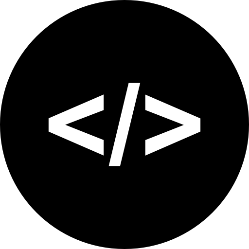

My Projects

Pong
Also able to be played with two people using wasd and the arrow keys. The AI predicts where the ball is going to land vertically on the other side and moves the paddle in time to hit it. It was made using python tkinter.
Tic-Tac-Toe
This is also able to be played with two people by just clicking the boxes during your turn. When the space bar is clicked, using the minimax algorithm, the AI will play the move with the best end result for whoevers turn it is. The gui was also made using python tkinter.
Gravity
The program uses Velocity Verlet integration to simulate orbits more accurately than Semi Implicit Euler and was made with plain javascript. There's also a toolbar on the side to add, modify, and delete bodies and to change the focus of the simulation. https://eshan168.github.io/orbitsimulator/
Calculators
Website with an all three options chi-queares calculator and a regression calculator. The chi squares calculator provides a table that you can add rows and column to and calculates the text statistic and p-value. The regression calculator can take input from either a table or text box and outputs the least squares regression line and the test statistic and p value of its slope. https://eshan168.github.io/statcalculator/ + https://eshan168.github.io/regression/
MasterMind
Master Mind Ai that solves the code in an average of 4.35 - 4.36 turns. Looks at all possible guesses and chooses the one that reduces the remaining possibilities the most by going through all the possible feedback patterns for each guess and calculating the average information gained for each guess in bits. Then decides its final guess based on how much information it provides and the probability that its the real code. Based off 3Blue1Brown's wordle bot.